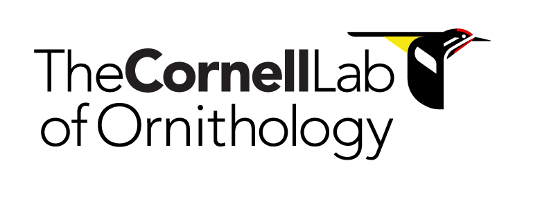
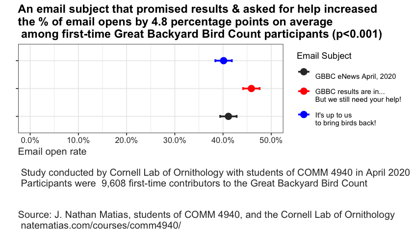
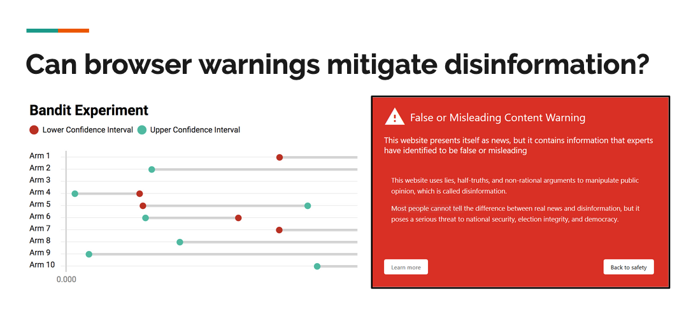

COMM 4242: The Design & Governance of Digital
Experiments
Online platforms, which monitor and intervene in the lives of billions of people, routinely host thousands of experiments. These studies evaluate policies, test products, and contribute to theory in the social sciences. They are also powerful tools to monitor injustice and govern human and algorithm behavior. How can we conduct behavioral experiments reliably at scale and also govern their power in society?

What You Learn
In this hands-on class, students will develop practical experimentation skills, engaging with methods, theory, ethics, and governance of large-scale behavioral research online. For a final project, student teams design or analyze results from a novel experiment in online behavior.
By the end of the semester, you will be able to:- Identify, analyze, and evaluate the quantitative content
of field experiments in the social sciences and computer
science
- Describe and evaluate the kinds of knowledge that
experiments bring to policy, product design, and theories in
the social sciences, as well as their limitations
- Summarize and criticize leading views on the ethics and governance of experiments in society, and in relation to your own project
- Design and analyze research from the perspective of rapid
experimentation and reproduction in industry and the social
sciences
- Understand the kinds of knowledge that experiments bring to policy, product design, and theories in the social sciences, as well as their limitations
- Design a novel field experiment or synthesize novel results from past studies
Activities
Weekly Activities: Throughout the semester, students
will read a selection of articles and discuss that reading in
class and in an online chat. In the first half of the
semester, students will complete a weekly assignment in pairs.
In the second half of the semester, once teams have been
formed, students will submit regular progress reports on their
team project.
Midterm: The midterm is a group proposal for your team
project, including a description of the project, a list of the
roles that team members will play, and a timeline.
Final Project: The final for the class is two-part. The
first part is a group project and final group presentation of
that project (in small teams). The second part of the final is
a 900 word argumentative essay that analyzes one aspect of
your group project through the lens of one of the critical
issues introduced in the class.
Grading: Participation in class & online: 20%.
Weekly assignments: 20%. Midterm project proposal: 20%. Final
project: 40%.
About the Instructor

Dr. J. Nathan Matias (@natematias) organizes citizen behavioral science for a safer, fairer, more understanding internet. A Guatemalan-American, Nathan is an assistant professor in the Cornell University Department of Communication.
Nathan is the founder of the Citizens and Technology Lab, a public-interest project at Cornell that supports community-led behavioral science—conducting independent, public-interest audits and evaluations of social technologies. CAT Lab achieves this through software systems that coordinate communities to conduct their own A/B tests on social issues. Nathan has worked with communities of millions of people to test ideas to prevent online harassment, broaden gender diversity on social media, manage human/algorithmic misinformation, and audit algorithms.
Projects & Partners Spring 2020
👍 Upworthy Research Archive 📈
2014 was the year that the digital media company Upworthy “broke the internet” in the words of cofounder Peter Koechley. By publishing positive, progressive news stories and optimizing them with A/B testing, Upworthy came to dominate online attention.
In 2019, Good Inc. and Upworthy released their archive of experiments for analysis by COMM 4242 students. What can we learn from all those tests? In this class, students will work in teams to study the impact and ethics of some of the highest profile experiments in U.S. democracy.
Cornell Lab of Ornithology
This year, students will be working together to design and
test outreach messaging for initiatives at the Cornell Lab of
Ornithology, one of the world's leading citizen science
organization.
Final Projects from Previous Classes
Here are some of the final projects designed by students in past versions of this class.
🦅 🦜Testing Messages for Increasing Engagement with Conservation 🦉 🦆
In 2020, the class worked with the Great
Backyard Bird Count, an annual citizen science project
that organizes over 160,000 people to count birds over four
days every spring. Teams of students developed messaging
strategies for increasing engagement from people who
participate in the count.
Promoting Inclusion & Participation in an Online Gender Discussion Community

Many users join gender-related discussions online to discuss current events and their personal experiences. However, people sometimes feel unwelcome those communities for two reasons. First of all, they may be interested in participating in constructive discussions, but their opinions differ from the a community's vocal majority. Accordingly, they feel uncomfortable voicing these opinions due to fear of an overwhelmingly negative reaction. Furthermore, as we discovered in a survey, some participants in online gender conversations oppose feminism and wish to make the experience uncomfortable for commenters.
In this ongoing study, two undergraduate students worked with
moderators of an online community to test the effects on
newcomer participation of interventions that provide
first-time participants with more accurate information about
the values of the community and its organizers.
Read the report: Reducing
the Silencing Role of Harassment in Online Feminism
Discussions
📊 Optimizing Disinformation Warnings with Bandit Algorithms 🤠
In information security, warning messages are used to inform users of potential threats, including malware distribution, phishing, and spam. This team (Ben Kaiser, Kevin Lee, Elena Lucherini, and Frishta Abdul Wali) set out to study if warning messages could influence users to disengage with disinformation websites.
Because the possible message designs too numerous to be tested using randomized trials, this team created a bandit algorithm to sequentially test a large number of possible interventions.
🗳 Auditing Facebook and Google Election Ad Policies 🇺🇸
Austin Hounsel developed software to generate advertisements and direct volunteers to test and compare the boundaries of Google and Facebook's election advertising policies. In the class, Austin chose statistical methods and developed an experiment plan in the class. Our findings were published in The Atlantic and will also be submitted in a computer science conference paper (full code, data, and details are available on Github).
In this study, we asked how common these mistakes are and what kinds of ads are mistakenly prohibited by Facebook and Google. Over 23 days, 7 U.S. citizens living inside and outside the United States attempted to publish 477 non-election advertisements that varied in the type of ad, its potentially-mistaken political leaning, and its geographic targeting to a federal or state election voter population. Google did not prohibit any of the ads posted. Facebook prohibited 4.2% of the submitted ads.